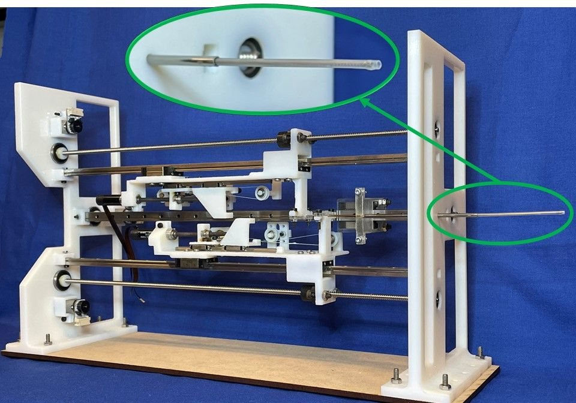
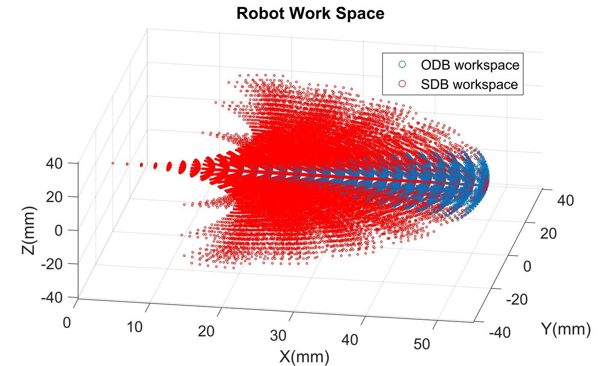

Dexterous Telescopic Tendon-Driven Needle Robot
NitinolSeries Elastic Actuation
Follow-the-LeaderNeurosurgery
Objective: a meso-scale, multi-stage robotic needle capable of Follow-the-Leader (FTL) navigation to minimize tissue damage during neurosurgery.
Technology: a 5-DOF needle built from three telescoping superelastic nitinol tubes with notched, tendon-steered tips, driven by Series Elastic Actuators (SEAs) with closed-loop force control written in C++.
Impact: sub-millimeter precision with a tip position error of 0.92 mm, and validated “S” and “C” shape maneuvers with ~1.1 mm FTL tracking error.
My role: mechanical design & prototyping · actuation sizing and motor bring-up · force control software · kinematic modeling · nitinol fabrication and failure analysis · experimental validation

